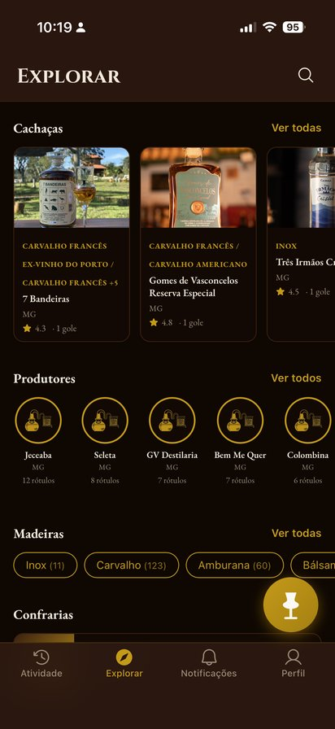
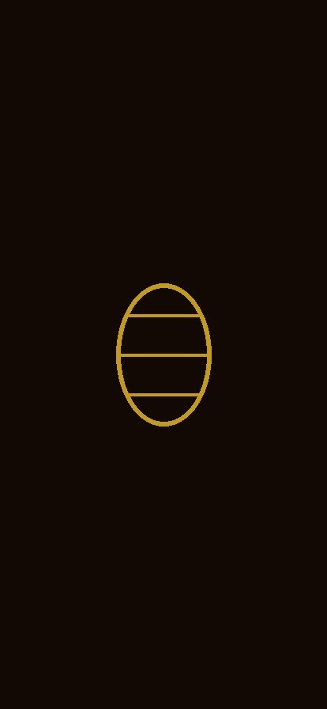

Cada gole vira registro
Foto, nota em barris em vez de estrelas, e o perfil sensorial do que você provou. Seu diário de degustação, sempre à mão.
Barrica
Registre cada degustação e descubra a procedência: produtor, município, madeira, envelhecimento. Compartilhe com quem entende. Cachaça de alambique merece memória.
Em breve no Google Play e na App Store
Entrar na lista de espera
Foto, nota em barris em vez de estrelas, e o perfil sensorial do que você provou. Seu diário de degustação, sempre à mão.

Produtor, município, madeira de envelhecimento, tempo de descanso, subcategoria. A ficha completa de cada cachaça, sem precisar pesquisar fora.

Siga amigos, veja o que estão provando por perto e organize sua confraria — listas, conquistas e o feed de quem divide a garrafa com você.
Usamos seu e-mail apenas para avisar do lançamento. Sem spam. Política de Privacidade
O Barrica nasce com dados de procedência verificada, sempre com a fonte citada. Se a sua instituição analisa, certifica ou premia cachaças de alambique, vamos conversar: barricaapp@gmail.com